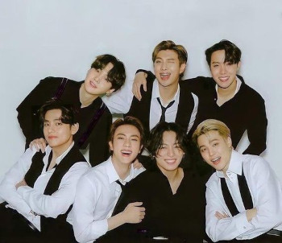

Bangtan Sonyeondan
O nome BTS significa Bangtan Sonyeondan ,방탄소년단,que significa "Escoteiros à prova de balas".Mas em julho de 2017, o BTS anunciou que seu nome também significaria "Beyond the Scene" (Além da cena).É um grupo masculino sul-coreano formado pela empresa Big Hit Music,que conquistou os corações de milhões de fãs em todo o mundo desde sua estreia em junho de 2013.
Um pouco do inicio
Os membros RM,Jin,SUGA,Jhope, Jimin, V e JungKook fazem a composição da boyband. O grupo realizou sua estreia oficial em 13 de junho de 2013, com o lançamento do single "No More Dream", faixa do single álbum 2 Cool 4 Skool. Em 16 de julho foi lançado o videoclipe para a música "We Are Bulletproof Pt.2". Em 11 de Setembro, lançaram seu primeiro mini-álbum O!RUL8,2?, promovendo-o com o single "N.O".
Ganhando reconhecimento por sua música autêntica e autoproduzida, performances de alto nível e a maneira como interagem com seus fãs, o BTS se estabeleceu como "ícones pop do século 21", quebrando inúmeros recordes mundiais. Ao transmitir uma influência positiva por meio de atividades como a campanha LOVE MYSELF e o discurso "Speak Yourself" da ONU, a banda mobilizou milhões de fãs em todo o mundo (chamados ARMY).
Além disso,coletou quatro músicas nº 1 em um período de 9 meses, realizou vários shows esgotados em estádios em todo o world e foi nomeado o Artista do Ano de 2020 da TIME. O BTS foi indicado para Melhor Performance Pop Duo/Grupo para o 63º Grammy Awards e reconhecido com vários prêmios de prestígio, como Billboard Music Awards, American Music Awards e MTV Video Music Awards. O BTS lançou seu álbum de antologia, Proof, em 10 de junho de 2022.
Em junho, durante as comemorações do nono aniversário, o grupo anunciou a suspensão temporária das atividades em grupo para focar em projetos solo e outros empreendimentos. Em 24 de agosto, a revista Billboard informou que o BTS se apresentaria em Busan como um grupo em 15 de outubro em um concerto beneficente em apoio aos esforços da cidade para ter uma Exposição Mundial em 2030, com o grupo promovendo o single Yet to Come.